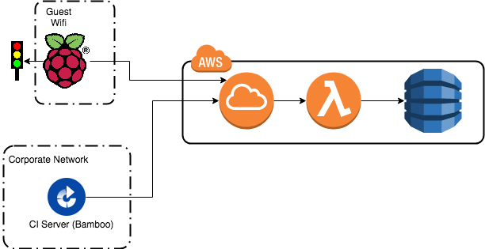

Connecting lights or other displays to your CI servers have proven to be an invaluable resource for development teams who wish to receive immediate feedback on the health of their builds. This project grew out of a particular need at a corporation where the raspberry pi driving our build lights could not be placed on a network that could communicate with our CI server. We created an intermediary API in AWS that the CI server can record results to and the raspberry pi can query to retrieve the light status. Having implemented various versions of this in multiple organizations, we decided to open source the project so that we could more easily reuse it and share among other continuous integration enthusiasts.
Build Lights: Our build lights are led's connected to a raspberry pi. It connects to our local "guest" wifi network.
CI Server: We're running Atlassian Bamboo within our corporate network. Technically the agents are in AWS utilizing Bamboo's elastic agent functionality, but it's all treated like part of the corporate network and the guest network where the PI runs doesn't have access to Bamboo.
Build Signal APIs: These are lambda functions fronted by AWS API Gateaway, and utilizing DynamoDB for storing build/light state. 
There's a Bamboo plugin written in Java using Atlassian's development kit (other CI server plugins to come). After each build completes it makes a rest call to the API to record the build result (only pass/fail). It ignores results from branch builds.
Teams may have a single light to represent all their jobs, or multiple lights. With multiple lights, each may still represent multiple jobs, such as having a light for all jobs associated with a particular team or project. There's an API for setting a configuration for a light. The configuration simply provides an ID for the light and a regex pattern to match against the build IDs. Any build that matches that regex pattern and is in a failed state sets that light to failure. Otherwise that light is set to success.
On the Raspberry PI there's a cron job that executes a python script every minute to query the API for the light status. Python was chosen as there are readily available python libraries for controlling the LED lights we used.
Utilizing the API Gateway, Lambda functions, and DynamoDB means there is no infrastructure or even VM's/EC2 instances to manage or monitor. The lambda functions were written in GoLang. This decision simply came from the desire to gain experience with GO, and it works extremely well for us in this use case.
The first version we built for a team that only needed a single light, so we ordered a basic SMD5050 led strip. (This turned out to be more complex than the multi-light version, so we would recommend skipping this and documenting it just for a historical and learning exercise). Special thanks to https://dordnung.de/raspberrypi-ledstrip/ that we used as reference for this implementation.
Here's our Part List:
The next version we built had a team that wanted different lights for groups of builds. The multi-light version turned out to be much simpler. We used a WS2801 light 5V strip. This allows us to control the lights directly from the PI without transistors and provide the power directly from the PI's 5V output pins instead of requiring a separate 12V power supply for the lights.
Part list for this version is just the W2801 5V light strip and wires used to connect to the Pi (again, a Pi3 Model B).
Wiring: